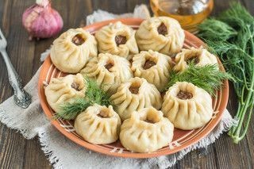
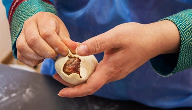
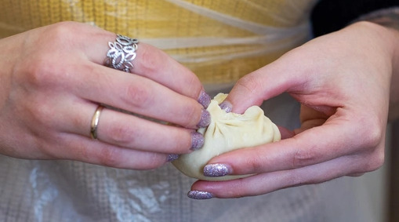
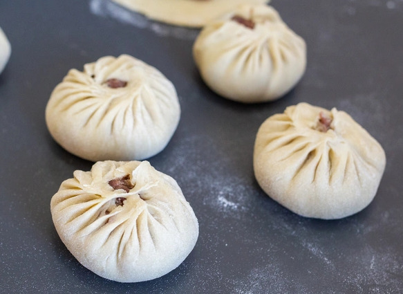
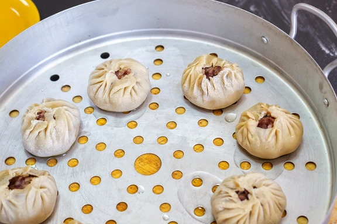

Buuz

Buuz (Mongolian: Бууз; Buryat: Бууза/Buuza, from Chinese 包子; 'Baozi')
are a type of Mongolian steamed dumpling filled with meat. An example of
authentic Mongolian and Buryatian cuisine, the dish is traditionally eaten
at home during Tsagaan Sar, the Lunar New Year. These days it is also
offered at restaurants and small cafes throughout the capital city of
Ulaanbaatar.
Ingredients
Dough
- Flour - 250 g
- Water - 1.5 L
Filling
-
Minced meat - 300 g. Traditionally, mutton is used, other types of meat
such as beef work just as well. Mongolians consider fat meat to be of
higher quality, but there's no problem in using western style lean meat.
- Onion - 1 p. (Minced)
- Garlic cloves - 2 p. (Minced)
- Water, Salt, Pepper - 3-5 tblsp.
Prepare the Filling
- Mix minced meat, onion and garlic.
- Add water until the mass is smooth to work with.
- Add enough salt and spices (the dough has no salt).
Prepare the dough
-
Mix flour and water to create a pliable dough. Let it rest for 15 min.
- Cut the dough into 2 cm (0.8 in) thick slices, roll the slices.
-
Cut the rolls into pieces of 3 cm (1.2 in), flatten the pieces with a
finger.
Form the pockets
The decorative design of the buuz is a matter of honor for the cook. At
first, the result will probably look a bit clumsy. Mongolian experts
produce small miracles in no time almost without looking.
There are several different possibilities to form the buuz, but the
beginning is always the same.
-
The pieces of dough are rolled into circles of about 7 cm (2.8 in)
diameter, making the center slightly thicker than the edge. It is best
only to roll as many circles you can process further within a few
minutes. Forming the pockets will be more difficult when the dough is
already starting to get dry.
-
Hold one circle the open hand (the left one for righties) and place
about one tea spoon of the meat mass in the center.
Round Buuz
This is the most traditional shape, and differs the most from the other
forms of mongolian filled pockets.
-
Fold the edge at one side, and press it together with your fingers.
-
Create another fold next to the previous one, slightly offset to the
outside, and press it together as well.
-
Continue this way, continuously rotating the buuz as you go along.
-
When done right, then this will result in a ring, which keeps the pocket
together at the top.
- A small opening remains open in the center.
Folded Buuz
This method doesn't require as much dexterity, but also yields an
esthetically pleasing result.



Cooking the Buuz
The finished Buuz are cooked under steam without pressure. The easiest way
to do this is a special pan with perforated inlays. Such inlays are also
available for normal pans. Flat and wide inlays are used for the wok type
pan used on the stove in the yurt.

- Oil the inlays, or dip the bottom of each Buuz in oil.
- Place the Buuz on the inlay, ideally without touching each other.
- Fill sufficient water into the bottom of the pan.
-
Insert inlays, close the lid, and don't open it anymore until the Buuz
are finished.
- Keep the steam going for about 15 min.
-
Now open the lid, and fan some air to the Buuz, eg. with a cutting
board. This will give them a glossy look, and a tasty looking slightly
reddish color.
Serving suggestions
The tradition mongolian cuisine knows very little vegetable, so that the
Buuz are considered a complete meal (possibly with Ketchup or other
condiment). Served this way the quantities given are good for 2 people.
When served with vegetables or other side dishes, the quantities should
easily feed 4 people.